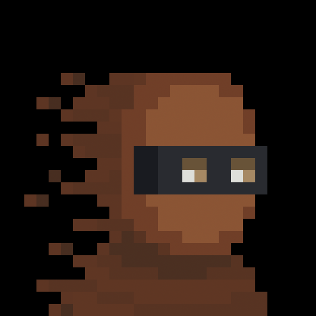
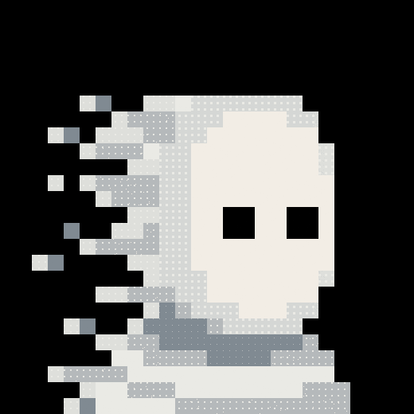
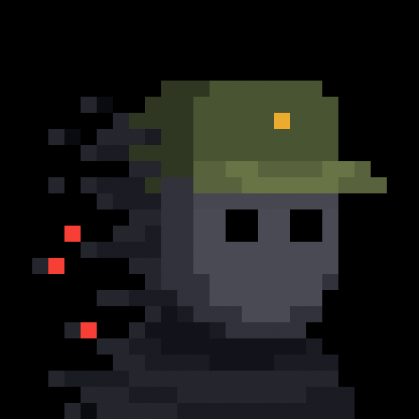
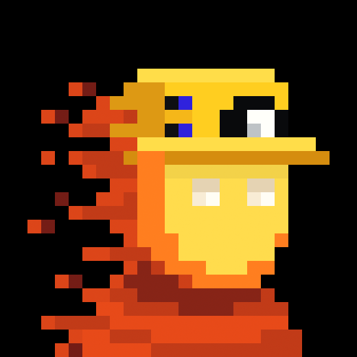
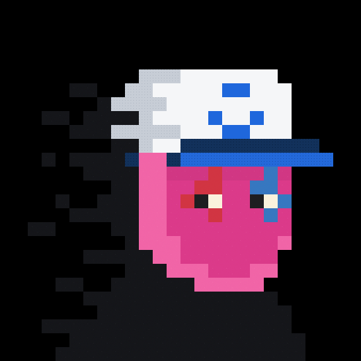
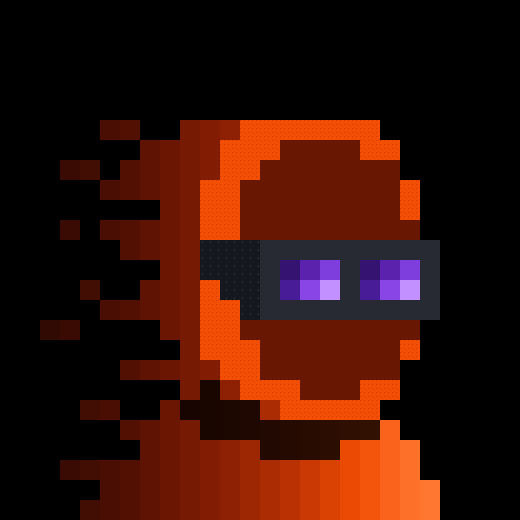
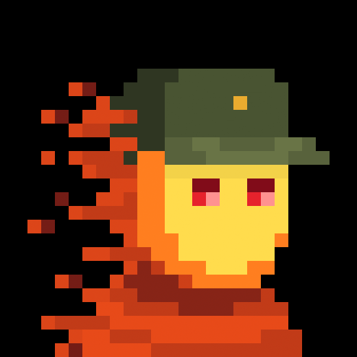
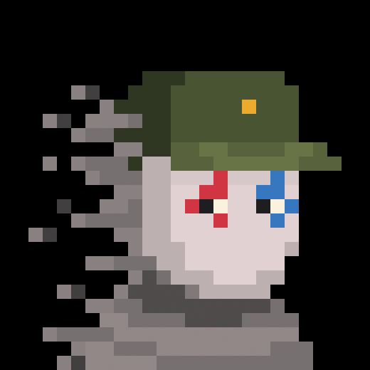

Niko · #9701
Original sourceBrown stepped head; charcoal horizontal eye band; cream/tan square eyes; brown blocks dissolving toward the left. No hair, nose, eyebrows or human mouth.
Unmodified originals from zilkroad.com. Role names are proposed casting labels.

Brown stepped head; charcoal horizontal eye band; cream/tan square eyes; brown blocks dissolving toward the left. No hair, nose, eyebrows or human mouth.

Off-white stepped head, black square eyes, light-gray noise texture, gray neck bands, white/gray trail to the left. No halo or wings.

Dark gray face, BLACK square eyes, olive Recon cap and gold badge, black shoulders, red accent pixels in the left trail. No yellow glowing eyes.

Yellow face, pale square eyes, yellow Miner headwear with black/gray lamp and blue marks; orange-red trailing blocks.

Pink face, asymmetric red/blue eye markings, white-and-blue Node Captain cap, dark shoulders. No added hair or human smile.

Deep rust face, charcoal horizontal eye band, purple square eyes, orange edge and rust dissolving trail. No added hair.

Yellow face, red square eyes, olive Recon cap with gold badge, orange trailing blocks. No flaming skull or teeth.

Pale gray-pink face, asymmetric red/blue eye markings, olive Recon cap with gold badge, gray trailing blocks.